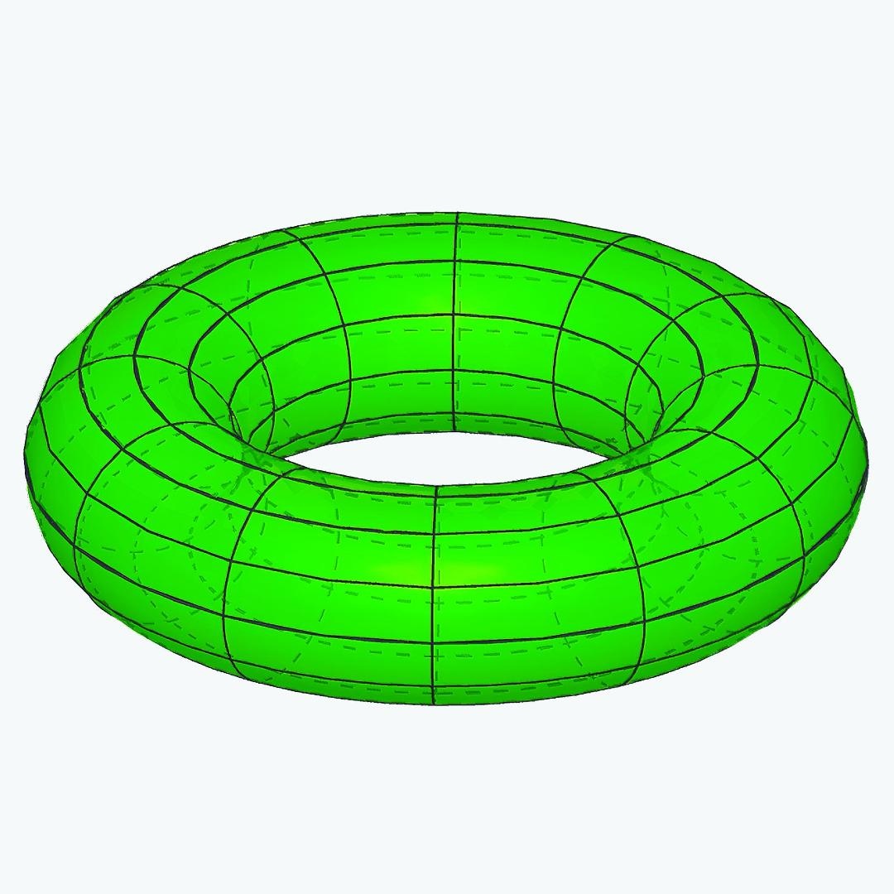

"Take any book on homological algebra, and prove all the theorems without looking at the proofs given in that book. Homological algebra was invented by Eilenberg-MacLane. General category theory (i. e. the theory of arrow-theoretic results) is generally known as abstract nonsense (the terminology is due to Steenrod)."
— Serge Lang, Algebra, First edition: page 105; Second edition: page 175.

I have been using homological algebra in some of my research, so I am offering an introductory course on homological algebra during the spring semester of 2025. For details, please check this link. The course is at an elementary level, focusing on the basic concepts and techniques of homological algebra, as well as some applications in algebra and topology. We will cover topics such as chain complexes, homology and cohomology, exact sequences, projective and injective modules, derived functors, and spectral sequences. The prerequisites for this course are a solid background in linear algebra, abstract algebra, and basic category theory